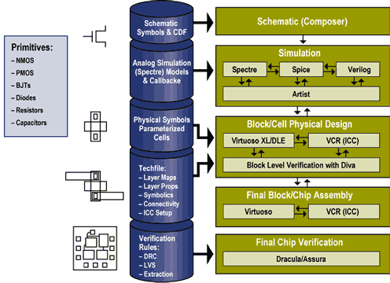

- research -
|
. These teaching faculty are joined by researchers from other departments and colleges to form a broad-based, multidisciplinary team. Research efforts in the process design and improvement area are frequently supported in whole or in part by industry and sometimes involve industrial internships for graduate students. Frequently, one of the products of research into process improvement strategies is computer software in the form of design tools. A large software development project, the Clean Process Advisory System (CPAS), is currently being jointly sponsored by the US EPA and industrial partners. |
Plastics, and Mitsubishi Chemical Corporation, BASF, Rohm and Hass CO. . Chemical Process Design and Control Center Chemical Process Design and Control Center The Chemical Process Design and Control Center focuses on applied research in the design and control of chemical processes. Some of the center's activities of interest to business and industry include advanced computer methods for design of new processes, re-design of existing processes, and the design of control systems to meet new requirements such as product quality or waste minimization. Regular on-campus meetings update sponsors on recent research results and provide opportunities to meet faculty, students, and others interested in process design and control.
|
Simulation and modeling products for the Chemical Process Industries. Includes descriptions of PROSIM, a general purpose process simulation package, and TSWEET, a simulation package specializing in gas sweetening and sulfur recovery processes. CAD Centre at Strathclyde University Describes their research on design methods and computer support of the design process for engineering applications. CAPD - Computer-Aided Process Design Consortium The consortium in Computer-Aided Process Design is an industrial body within the Engineering Design Research Center that deals with the development of methodologies and computer tools for process industries. Computer Aided Process Engineering Research Group Describes mathematical modelling of industrial processes (process modelling and simulation) and the use of computers in design and flowsheeting. |
|  |
in chemistry from the University of California, Santa Barbara, in 1968. Rossiter joined the National Institute of Standards and Technology in 1969 as a member of the Organic Chemistry Section. From 1970 until the present, he has been a member of the Building Materials Division of the Building and Fire Research Laboratory. As an organic chemist, his research interests center around the performance and service-life prediction of organic building materials, particularly in the areas of roofing and thermal insulation. In addition, he has participated in projects involving lead paint and the performance of materials in solar collector systems. |
also look at: http://www.cheme.cmu.edu/research/capd/